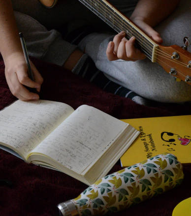

Hailing from the coastal city of Split, Croatia, Martha May is a
heartfelt songwriter and born performer. Infusing deeply personal
lyrics with an uplifting pop energy, her live shows are sure to move
you in every sense of the word.
Relocating to the UK in 2018 in order to follow her passion full-time,
Martha has steadily honed her songwriting and stage skills whilst
studying at the University of Chichester.

Now London based and powering through her master’s degree at Fulham’s
prestigious BIMM college, Martha is ready for action. With multiple
performances lined up and a debut album due for early 2022 release,
an artist like no other is poised to make her mark on the world.

Watch this space!